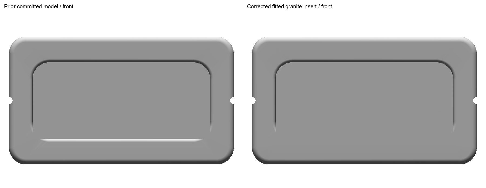
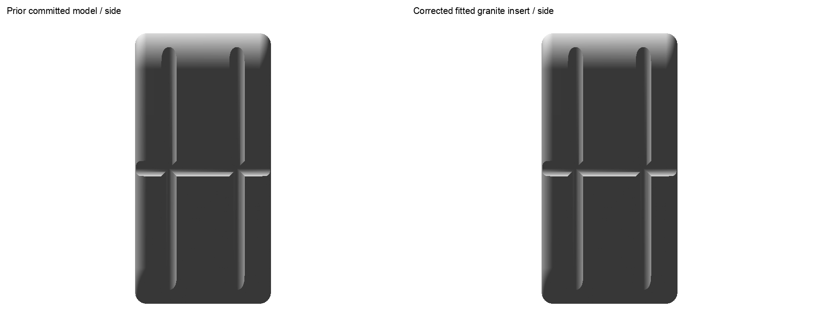
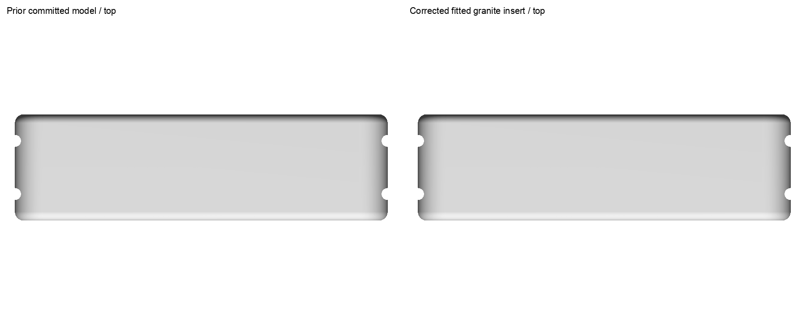
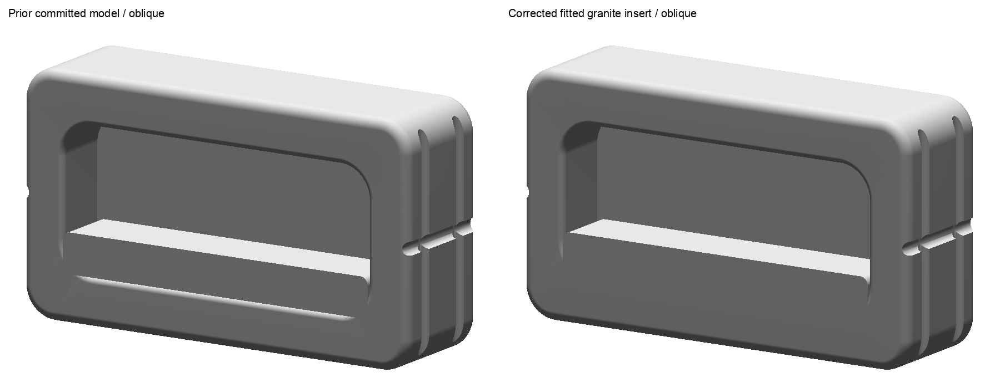
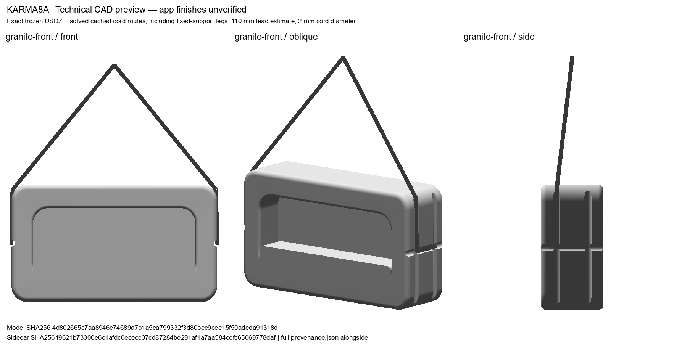
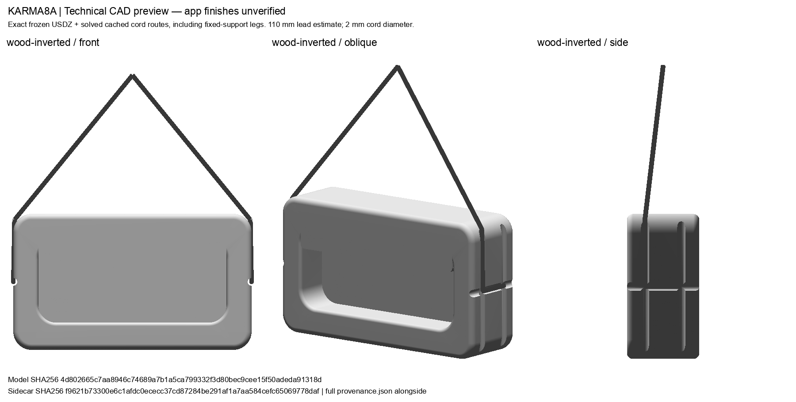

Native and delivery checks passed; human geometry review pending. Current app finishes, selections, orbits and workout appearance remain unverified. These are technical CAD renders.
The fitted lower wood rail removes overlap and the seam under the unchanged granite insert. The existing renderer metadata assigns wood to the body and granite to every exposed insert face. Estimated leads are reduced from 200 to 110 mm; all three poses were freshly solved against CAD. Three factual contacts and positions are preserved: 15 mm wood, 15 mm granite and 60 mm pinch.
Neutral geometry comparisons show the exact prior committed 9105c895 asset at left and current export at right. Whole frames are retained without cropping. They do not show runtime textures.




The cord previews below use the exact frozen USDZ and solved cached routes, including fixed support legs. Granite-front and pinch-side share their existing rigid pose. These are technical renders; cords are display geometry.


Independent delivery audit passed with no blockers; app and human review remain pending.
284 Python tests passed, 64 canonical packages validated, and Android staging matches exact bytes. A generic iOS build compiled the app and test bundle with correct generated metadata and embedded ODR model. Zero unit cases executed; zero current app frames. No #11 guest was created or installed. The separate bounded #10 simulator retry failed to reach usable app content; its evidence is retained independently.
Review and estimate limits · Source mapping · Contact preservation · Native checks · Export checks · Cord clearance · Python results · Android staging · Current runtime status · Delivery identity · Cleanup
Retained manufacturer whole front, reverse, oblique and in-use images support the unchanged product facts. Unpublished native fit/radii and compact cord lengths remain display estimates.